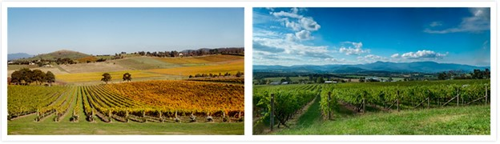
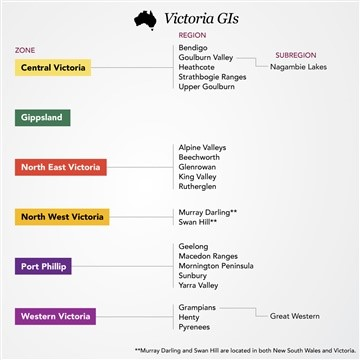
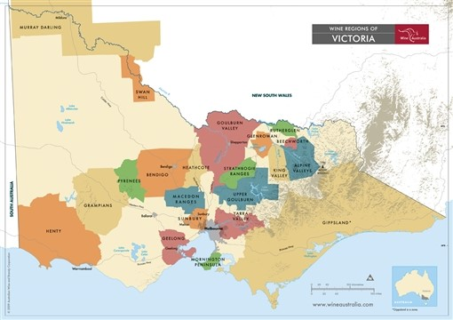

In 1838 the “ryrie brothers” leased land in yarra valley. Thus began victoria viticulture.
Victoria was an early winner, but then phylloxera arrived (1877 in Geelong vineyard) Rough times, but it’s coming back nowadays.
775 wineries (more than any other state what what) and 21 GI’s. 17% of Australia’s total wine grape tonnage. Climate becomes warmer as you move inland, but there are numerous, low mountain ranges that run throughout the state. Most densely populated state, wine for every taste. Sparkling to fortified.
Surrounds the capital city. Around Port Philip Bay. The end of Yarra River. Winds from Polar latitudes (southwesterlies) and the southern ocean help keep the area cold. Mediterranean area, and all the regions are either Region I or II winkler scale. Most successful grapes are Burgundian.
A lovely place. Once, lost its entire industry (wine) thanks to phylloxera, now it is one of the most important again. One of Australia’s top 5 regions. Some stars: Yarra Yering, Mount Mary and Chateau Yarrinya (purchased by De Bortoli) Champagne giant Moet & Chandon established Domaine chandon in Yarra Valley. Pinot Noir most planted, chardonnay close 2nd. Both are about 75% of total grapes. Shiraz and Cabernet Sauvignon make lighter, more elegant styles. Shiraz (often called Syrah) here is Peppery, floral and red-fruited. Whole cluster is common. Low levels of new oak. Most under 13.5%
Yarra valley (alongside Margaret river) is one of the top Chardonnay producers. Here it is more stony and mineral in style. Malolactic is rare. Barrel fermentations are common, new oak usually ⅓ or less during maturation. Leesy, sweet citrus and melon notes are common.
Internationally, best known for PN. Cool climate and long growing season. Like Otago but a touch more lean and lower alcohol.
Valley is divided into two sectors: warmer lower yarra valley in the north (has sandy loam soils) and cooler, higher-elevation Upper Yarra VAlley in the south. (soil is red Basalt) PN from upper more defined and mineral. Lower: Plumper and less aromatic.
Yarra Valley in Fall and Spring.
South of Yarra Valley is the slender Mornington Peninsula GI. Most of the land is expensive oceanfront real estate. About 60 wineries. Maritime region. Quite cool. Some regional variation. Pinot Noir (about half of the acreage) and good chardonnay and Pinot Gris
Across the bay: Geelong GI. Driest in the Port Philip zone, and spring frosts and wind damage can be challenging.
3 unofficial sub-regions: Surf Coast/Otways, the Bellarine (a peninsula that reaches out toward Mornington) and the Moorabool Valley.
Final two: Macedon Ranges and Sunbury. MR usually between 400-600 M in elevation. PN chard and shiraz are most common. Both still and sparkly made. Bindi Wine Growers is the most recognizable Macedon Ranges name worldwide.
Gold rush area (1851 and 1852) Heathcote and Bendigo here. Now both are red wine areas, and highly regarded for the quality of its full bodied, dense shiraz. Jasper Hill is here. Heathcote is a touch cooler than Bendigo.
Both dry, warm, continental. On the eastern side of Heathcote, there is a strip of rich red earth from 500 million year old Cambrian volcanic greenstone.
Then north east of both is Goulburn Valley GI. Shiraz most important. Style: Bigger/bolder. Tahbilk (the first commercial winery) has persisted through phylloxera and all. Has a ½ hA of the original, ungrafted vines from 1860. Also some of the oldest Marsanne vines (1927).
Most of the producers in Goulburn are clustered within the subregion of Nagambie Lakes GI. There’s a complex of inland lakes and lagoons to moderate climate (continental).
South East: Strathbogie Ranges GI and Upper Goulburn GI are sparse areas without that much that is interesting. People are starting to look at Chardonnay and PN here.
Surrounds the historic, 19th century gold-mining town named Rutherglen. Murray River is the Northern border. Famous for its stickies. Altogether today, the region has about 800 hA of vineyards. Shiraz and Durif/Petit Sirah are most planted for table wine. For white Rhone grapes (people do wonder why)…
Rutherglen Muscat: one of the sweetest, most liqueur like wines. Blend of vintages.
Muscat of Rutherglen Network. Est 1995. They developed a voluntary, 4 tier classification system.
Brown muscat (Muscat de Frontignan) or (Muscat Rouge a Petit Grains) grows on deep “Rutherglen Loam” and shrivels on the vine. Long late summers and early autumn. Botrytis is undesirable, and not typical. By harvest, may exceed 36 Brix.
After harvest, usually allow the muscat grapes to undergo a short fermentation on the skins, 20-40 g/l consumed. The wine is then pressed and immediately fortified with neutral 96 proof spirit. 1 to 4 just like port. There are only 8 wineries producing fortified muscat these days. All Saints, Morris, Campbells, Chambers, Stanton & Killeen, Rutherglen Estates, Buller, and Pfeiffer.
Topaque is the most unique. Fortified wine made with Muscadelle. The only one in the world focused on this grape. Similar process, passerillage, (but accumulates a lot less sugar than muscat). Same categories as for muscat. Usually lighter in color, usually 30-40 g/l less RS.
Common descriptors: honey, cold tea, and sardine oil.
Other regions in the NE Victoria Zone include Glenrowan, makes similar styles of dry reds and fortified wines as Rutherglen. Then higher elevations GI’s: Alpine Valleys, Beechworth and King Valley.
Red outnumbers white in the higher elevations (especially in Beechworth) but SB chard and pinot Gris are becoming more important. PN and Bordeaux grapes are more important, shiraz and durif take a back seat up there.
Victoria’s Warmest wine regions: Murray Darling GI and Swan Hill GI are in North West Victoria Zone, and they are shared with New South Wales.
These dry inland areas, like riverland, straddle the Murray River. (Australia’s longest) and only work with irrigation. This is supermarket territory.
Grampians GI and its sub-region, Great Western GI: at the western end of the Great dividing range.High elevation. (well, relatively) Known for sparkling (historically, even red sparkling) Red grapes dominate. 80% more or less, shiraz and Cabernet Sauvignon. Now it’s more table wine. Often called elegant, defined and peppery. Best producer: one named Best’s. Who knew. Seppelt is big producer
Pyrenees GI, NE of Grampians. Focus on shiraz and Cabernet Sauvignon. Richer and fuller than Grampians.
Henty GI, along the southern coast in Victoria’s south west corner, Nice and cold. PN chard and riesling dominate. Sparkling is common. Seppelt is a big producer.
On the eastern side of coastal victoria, Gippsland is unique: no sub GI’s within. It’s a bigger area, extends east from yarra valley along the bass strait coastline into the great dividing range south of king and alpine valleys.
Viticulture is concentrated in west Gippsland, next to yarra valley. Colder here, PN is most planted. Big producer: Bass Phillip.
 Return to the main page